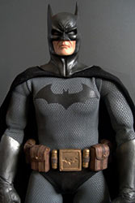

3 Monate sind seit meinen letzten Eintrag vergangen. Es ist nicht so, dass es keine Neuigkeiten über Batman gab,
da gab es genug wie z.B. die fantastische Fortsetzung The Dark Knight Returns Parts II oder die Ankündigung von
Arkham Origins, aber bedauerlicherweise fehlte mir ein wenig die Zeit, mich um mein geliebtes Blog zu kümmern.
Dazu gesellte sich aber auch die Ernüchterung über den letzten Film The Dark Knight Rises. Man darf es ja fast
gar nicht sagen, aber ich riskier’s: ‘Jehova’. The Dark Knight Rises war für mich eine bittere Enttäuschung.
Ich möchte jetzt nicht auf die einzelnen Schwächen von dem Film eingehen, die findet man zu Genüge im Netz,
Jack Nicholsons Joker fasst das eigentliche Problem gut zusammen: Where’s the batman? Ja, wo war er?
Ein Fan aus dem SuperHeroHype Forum hat sich mal die Mühe gemacht und die Zeit aller Szenen aus sämtlichen
Batman-Filmen addiert, in denen tatsächlich Batman zu sehen war. Ich war immer der Auffassung, das unsere
Fledermaus im ersten Burton Film von 1989 viel zu selten zu sehen war, aber dann wurde ich von The Dark Knight
Rises eines besseren belehrt. Bei TDKR kommt seine Leinwandzeit gerade mal auf 13% von der Gesamtzeit, bei Burton
waren es dann doch 22%. Und gefühlt ist es noch eklatanter. Also in jedem vorherigen Film gibt’s prozentual mehr
Batman zu sehen. Auch wenn Bruce Wayne häufig anzutreffen war, dies ist nicht das, was ich mir unter einem Batmanfilm
vorstelle, das geht ja schon Richtung Verpackunsschwindel.
Zum Ausgleich werden wir mit unsäglichen und auch unnötigen Nebenplots konfrontiert. Hinzu kommt noch, dass die
Story in eine Richtung geht, die letztendlich kaum noch was mit unserem Protagonisten aus dem Comic gemein hat, zu
sehr sieht man, dass Herr Nolan hier lieber eine von ihm geliebte Story erzählen wollte, die auf Charles Dickens
Roman ‘Eine Geschichte aus zwei Städten’ beruht, sie mit dem Etikett Batman kennzeichnet. So bekommt Batman ein paar
wenige Gastauftritte gewährt. Da hilft es auch nichts, wenn sein Bruder den Film lieblos mit verschiedenen Zitaten auf
berühmten Batman Comics schmückt, eher im Gegenteil, sind diese doch nun verbraucht für nachfolgende Filme.
Aber irgendwie zieht sich das Problem durch sämtliche Batman Verfilmungen der Neuzeit. Batman von 1989 zeigte einen Batman, der, auch wenn er nicht dem damaligen Comics entsprach, doch sehr an die Comicvorlage hielt, zumindest die aus der Frühzeit. Für eine Fortsetzung verlangte Tim Burton vom Studio aber etwas mehr Macht und Mitspracherecht. Und so kam es, das Batmans Rückkehr ein reiner Tim Burton Film wurde, in der Batman wiederum einen Gastauftritt absolvierte und die eigentlichen Stars wie auch schon im Film davor die Gegner waren. Nicht, dass Batman Rückkehr nicht seinen Reiz hat, aber mit den Comics besitzt der Film nicht viel Verwandtschaft.
Writelesen:Der Batman aus?
Der Batman aus den Comics endlich im Kino?
Part1

3 Monate sind seit meinen letzten Eintrag vergangen. Es ist nicht so, dass es keine Neuigkeiten über Batman gab,da gab es genug wie z.B. die fantastische Fortsetzung The Dark Knight Returns Parts II oder die Ankündigung vonArkham Origins, aber bedauerlicherweise fehlte mir ein wenig die Zeit, mich um mein geliebtes Blog zu kümmern.Dazu gesellte sich aber auch die Ernüchterung über den letzten Film The Dark Knight Rises. Man darf es ja fastgar nicht sagen, aber ich riskier’s: ‘Jehova’. The Dark Knight Rises war für mich eine bittere Enttäuschung.Ich möchte jetzt nicht auf die einzelnen Schwächen von dem Film eingehen, die findet man zu Genüge im Netz,Jack Nicholsons Joker fasst das eigentliche Problem gut zusammen: Where’s the batman? Ja, wo war er?
Ein Fan aus dem SuperHeroHype Forum hat sich mal die Mühe gemacht und die Zeit aller Szenen aus sämtlichen
Batman-Filmen addiert, in denen tatsächlich Batman zu sehen war. Ich war immer der Auffassung, das unsere
Fledermaus im ersten Burton Film von 1989 viel zu selten zu sehen war, aber dann wurde ich von The Dark Knight
Rises eines besseren belehrt. Bei TDKR kommt seine Leinwandzeit gerade mal auf 13% von der Gesamtzeit, bei Burton
waren es dann doch 22%. Und gefühlt ist es noch eklatanter. Also in jedem vorherigen Film gibt’s prozentual mehr
Batman zu sehen. Auch wenn Bruce Wayne häufig anzutreffen war, dies ist nicht das, was ich mir unter einem Batmanfilm
vorstelle, das geht ja schon Richtung Verpackunsschwindel.
Zum Ausgleich werden wir mit unsäglichen und auch unnötigen Nebenplots konfrontiert. Hinzu kommt noch, dass die
Story in eine Richtung geht, die letztendlich kaum noch was mit unserem Protagonisten aus dem Comic gemein hat, zu
sehr sieht man, dass Herr Nolan hier lieber eine von ihm geliebte Story erzählen wollte, die auf Charles Dickens
Roman ‘Eine Geschichte aus zwei Städten’ beruht, sie mit dem Etikett Batman kennzeichnet. So bekommt Batman ein paar
wenige Gastauftritte gewährt. Da hilft es auch nichts, wenn sein Bruder den Film lieblos mit verschiedenen Zitaten auf
berühmten Batman Comics schmückt, eher im Gegenteil, sind diese doch nun verbraucht für nachfolgende Filme.
Aber irgendwie zieht sich das Problem durch sämtliche Batman Verfilmungen der Neuzeit. Batman von 1989 zeigte einen Batman, der, auch wenn er nicht dem damaligen Comics entsprach, doch sehr an die Comicvorlage hielt, zumindest die aus der Frühzeit. Für eine Fortsetzung verlangte Tim Burton vom Studio aber etwas mehr Macht und Mitspracherecht. Und so kam es, das Batmans Rückkehr ein reiner Tim Burton Film wurde, in der Batman wiederum einen Gastauftritt absolvierte und die eigentlichen Stars wie auch schon im Film davor die Gegner waren. Nicht, dass Batman Rückkehr nicht seinen Reiz hat, aber mit den Comics besitzt der Film nicht viel Verwandtschaft.